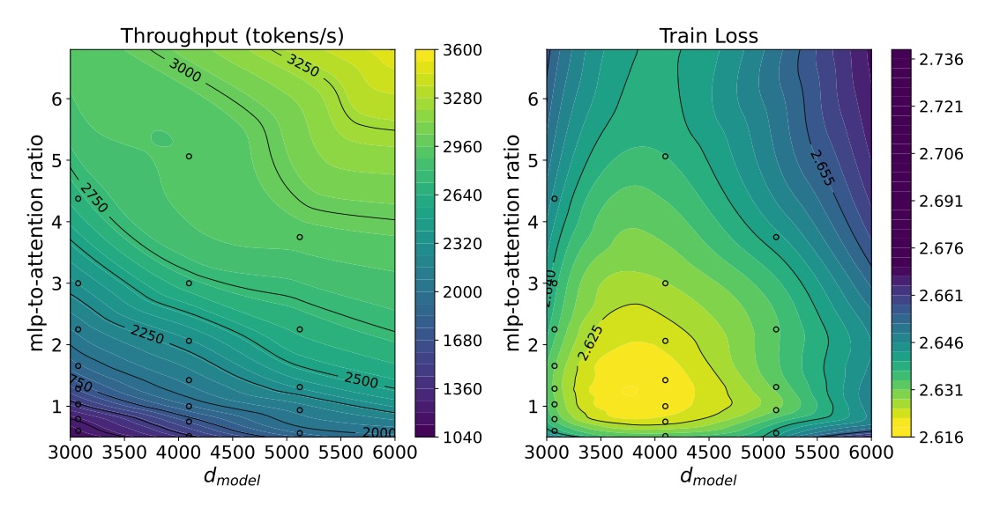
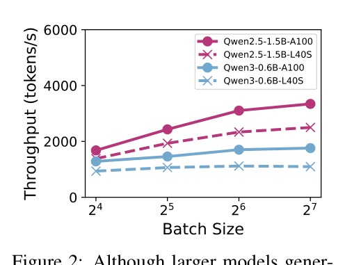
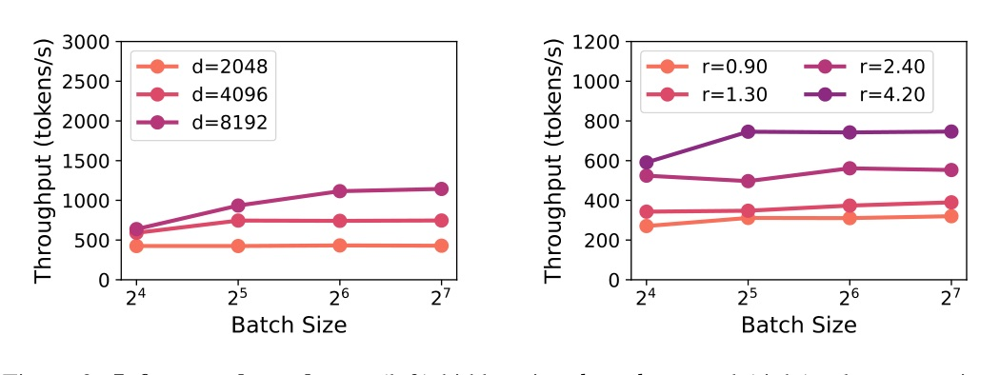
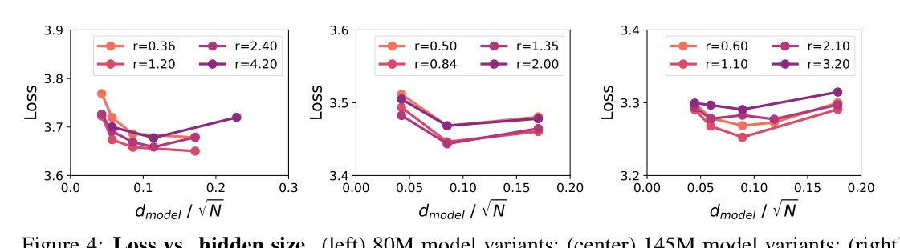
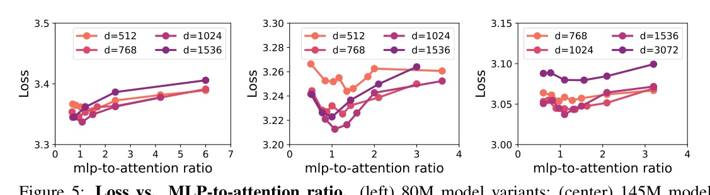
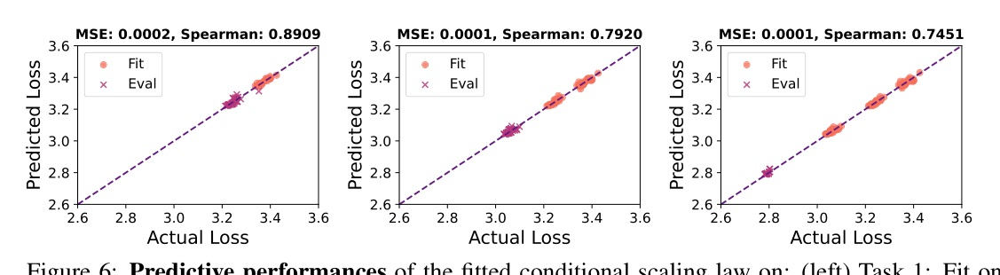
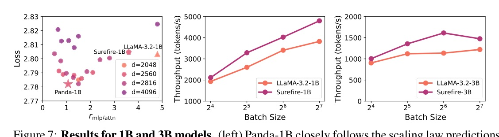
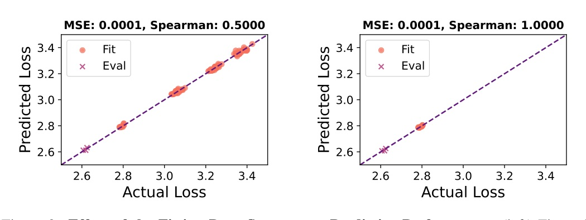

Toward inference-efficient LLMs without treating architecture as an afterthought.

A scaling law can choose an LLM shape, not only its size.
Fit loss against width and MLP/attention allocation, constrain quality, then search GQA for serving throughput.


Speed rises when attention work and KV-cache traffic shrink.
But accuracy has an interior optimum.
The study does not claim a free speedup: it makes efficiency gains admissible only while predicted loss stays below a target.


The multiplicative and additive forms assume separable effects of width and ratio.

| Model | Loss | Avg. 9-task acc. |
|---|---|---|
| LLaMA-3.2-1B | 2.803 | 54.9 |
| Panda-1B | 2.782 | 57.0 |
| LLaMA-3.2-3B | 2.625 | 61.9 |
| Panda-3B | 2.619 | 62.5 |
| Surefire-3B | 2.620 | 62.6 |


The useful output is not “make the model wider.”
It is a hardware-aware frontier between accuracy and serving cost.
The framework works because it separates a smooth accuracy model for width/ratio from an empirical discrete search over GQA and measured throughput.
both hidden size and the MLP-to-attention ratio exhibit U-shaped relationships with training loss.
hidden size 與 MLP-to-attention ratio 對 training loss 都呈 U 型關係。§3.3 p.5
This is the central correction to the naive rule “allocate less to attention” or “make the model wider.”
The two-step reference-and-calibration framework appears robust enough that simple calibrations perform well.
兩步式 reference-and-calibration 架構看來已足夠穩健，簡單校正也能有效。§5 p.8
The paper reports no gain from the more complex joint non-separable formulations it ablated.
Tomorrow: image generation / understanding — Tuesday rotation.